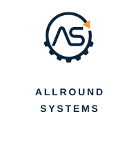

Brand Identity Guidelines · v1.0 · November 2026
An interlocking AS sits inside a broken ring — eight segments around one continuous system. One segment carries Signal orange; everything else is Navy. The ring is the “all-round”: multi-service coverage in Munich, held together as one identity.
The monogram locks A and S into a single stroke path. The segmented ring frames it like a system dial — complete coverage without a closed loop that would feel sealed or exclusive.
Signal orange appears only once — on the top-right ring segment. The wordmark never carries orange. Two inks maximum on any approved lockup.
AS is pixel-traced from the official mono PNG. The ring is a perfect geometric
circle with eight equal gaps cut out (not traced). ViewBox 0 0 100 100.
Signal orange sits on the top-right segment for color variants only.
python brand/trace_mark.py from _source-mark.pngAlso available: pure black and white for single-ink and photographic backgrounds.

Wordmark is always a single color — Navy on light, Paper/white on dark. Only the symbol carries Signal.
Wordmark proxy: Inter / Montserrat Bold, all caps, tracking ~0.14em, two lines ALLROUND / SYSTEMS. Product UI uses Inter 400–700.
Composition ratio target: 60% Navy / 30% Paper / 10% Signal. Signal is never used for running text.
#0B243B · structure, text, icons · 60%
#F5F3ED · light surfaces · 30%
#F19E38 · accent only · 10%
#5A6570 · secondary text
#C8CDD2 · hairlines, disabled
#071521 · dark-mode surface
| Asset | Digital minimum | Print minimum |
|---|---|---|
| Symbol | 16 px | 5 mm |
| Horizontal lockup | 120 px | 28 mm |
| Stacked lockup | 72 px | 18 mm |
Clear space equals one monogram stroke width on all sides. Nothing enters the ring gaps.
as-[asset]-[variant].[format]
| File | Use |
|---|---|
svg/as-mark-*.svg | Vector masters |
svg/as-lockup-horizontal-*.svg | Default lockups |
svg/as-lockup-stacked-*.svg | Stacked lockups |
svg/as-app-icon.svg | Social / app tile |
svg/as-favicon.svg | Browser favicon |
tokens.css | Brand color tokens |
Pattern inspired by the LADS TV brand kit. Raster PNG exports can be generated from these SVGs at 512 / 1024 as needed.